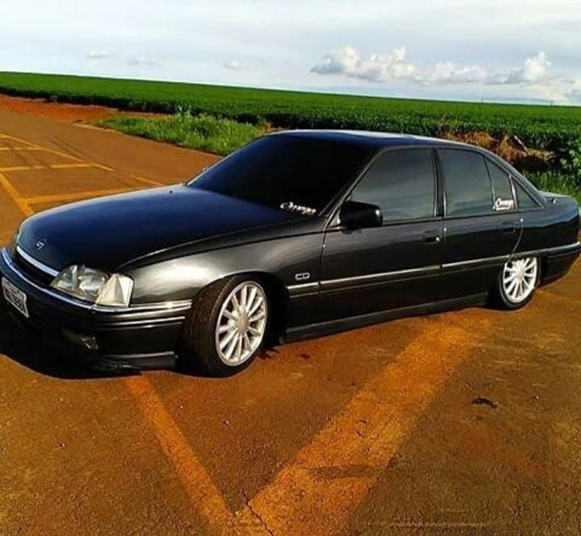

O Chevrolet Omega é um automóvel que foi fabricado pela General Motors no Brasil (com a marca Chevrolet), na Europa (com a marca Opel) e na Austrália (com a marca Holden).
Inicialmente, o Omega foi lançado em 1986 pela Opel, uma subsidiária da General Motors na Alemanha, tendo sido produzido na fábrica de Rüsselsheim até o ano de 2003 e exportado
para vários países, inclusive sob as marcas Vauxhall Carlton e Cadillac Catera.Uma versão esportiva do modelo também foi produzida em série limitada sob a marca Lotus, que na época
também pertencia ao grupo GM, durante o segundo semestre de 1990, para o mercado europeu.Outras versões dos modelos australianos do Holden Commodore também foram comercializadas
internacionalmente sob diversos nomes como Chevrolet Lumina, Chevrolet Caprice, Chevrolet SS, Pontiac GTO, Pontiac G8 e Vauxhall VXR8.Em 1992 foi apresentado ao mercado brasileiro
pela Chevrolet, produzido pela montadora na cidade de São Caetano do Sul, no estado de São Paulo. Seu lançamento introduziu tecnologias inexistentes nos demais carros nacionais daquela
época. Dentre suas qualidades, destacava-se o bom desenho aerodinâmico, a performance, a segurança, o conforto e a qualidade empregada no acabamento. Tais qualidades o levaram a conquistar
o prêmio Carro do Ano pela revista Autoesporte em 1993, Prêmio O Eleito do Ano, revista Quatro Rodas de 1993, o Good Design Award no Japão, em 1986, 1987, 1988 e 1989, pela sociedade Car of the Year
em 1987, pela revista australiana Wheels Magazine em 1997 , o Golden Snowflake de Design Avançado na França em 1987, e várias outras premiações na imprensa. A Chevrolet tinha como meta atingir o
mercado do Opala, um carro desenvolvido a partir da carroceria do Opel Rekord C de 1966 e que encontrava-se em produção desde 1968, após uma série de adaptações. A primeira geração, Omega A,
foi produzida na Alemanha até 1994, e no Brasil até 1998. A versão introduzida no Brasil em 1992 era a que estava para ser aposentada na Alemanha, dando ao Omega alguns anos de sobrevida.
Essa estratégia de introduzir modelos decadentes no primeiro mundo em países emergentes continua sendo utilizada pelas montadoras até os dias atuais. A segunda geração, Omega B,
foi lançada na Alemanha em 1994 e não chegou a ser vendida oficialmente no Brasil, embora algumas unidades tenham sido importadas por empresas independentes.
Em 1999 passou por um face-lift para o mercado Europeu, prorrogando suas vendas até 2003, quando foi dada por encerrada a sua produção.
A segunda geração introduzida oficialmente no mercado brasileiro em 1998, era produzida pela Holden, uma subsidiária da General Motors, com fábrica localizada na cidade de Elizabeth, na Austrália.
O modelo vendido no Brasil era referente ao Holden Commodore VT australiano, o qual compartilhava da mesma plataforma do Omega B alemão. Manteve-se com vários aprimoramentos até o ano de 2007, correspondentes aos modelos VX, VY e VZ do Commodore australiano.
Em 2007, houve uma reestruturação geral do modelo, utilizando a plataforma GM Zeta, um chassi inteiramente novo. Este modelo foi produzido na Austrália como Holden Commodore VE até o ano de 2013, mas comercializado no Brasil com a marca Chevrolet somente até o ano de 2012.
Segura a Maquina e algumas de suas especificações:
